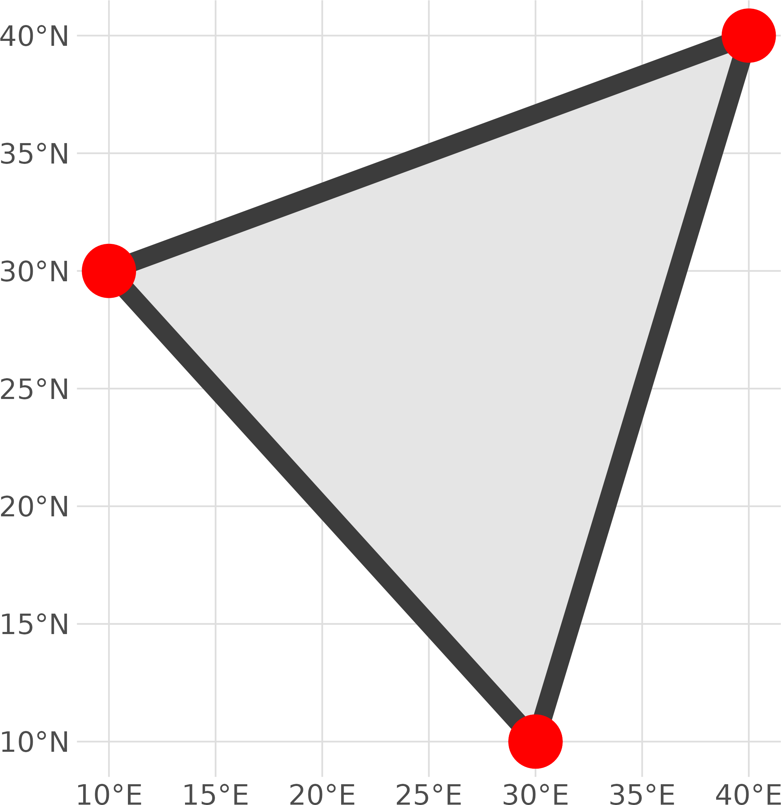
Data Management Best Practices
Making your data projects more reproducible, reusable and open
Philippe Massicotte
March 25, 2026
https://github.com/PMassicotte
philippe.massicotte@takuvik.ulaval.ca
@philmassicotte
https://fosstodon.org/@philmassicotte
www.pmassicotte.com
Outlines
Open file formats for your data.
- Tabular data.
- Geographical data.
Data project organization and good practices.
- Raw data management.
- Documentation and metadata.
File and variable naming.
Tidying and formatting data.
Backups.
Publishing your data.
File formats
File formats
The file format used to store data has important implications:
- Allows to re-open and re-use your data in the future:
Software might not be cross-platform (Windows/Mac/Linux).
Proprietary file formats can become obsolete or unsupported.
File formats
Ideally, the chosen file format should have these characteristics:
Non-proprietary: open source.
Unencrypted: unless it contains personal or sensitive data.
Human-readable: or have open source tools available for reading and writing.
Performance: consideration for efficient read and write operations, especially for large datasets, is crucial for optimal performance.
Common open-source text file formats
Tabular plain text file formats:
.CSV: Comma (or semicolon) separated values..TAB: Tab separated values..TXTand.DAT: Plain text files (data delimiter is not known).
All these file formats can be opened using a simple text editor.
Examples of CSV and TSV files

This dataset contains 4 variables (columns). The first line generally includes the names of the variables.
A comma-separated values file (.csv).
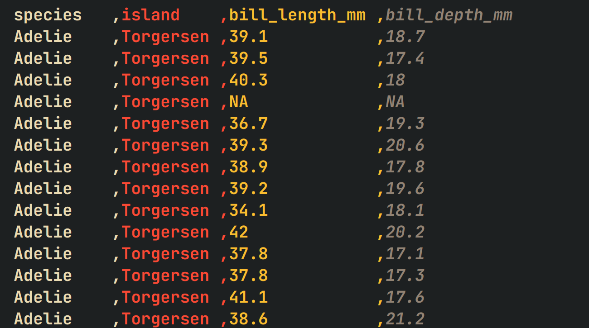
A tabs separated values file (.tsv).
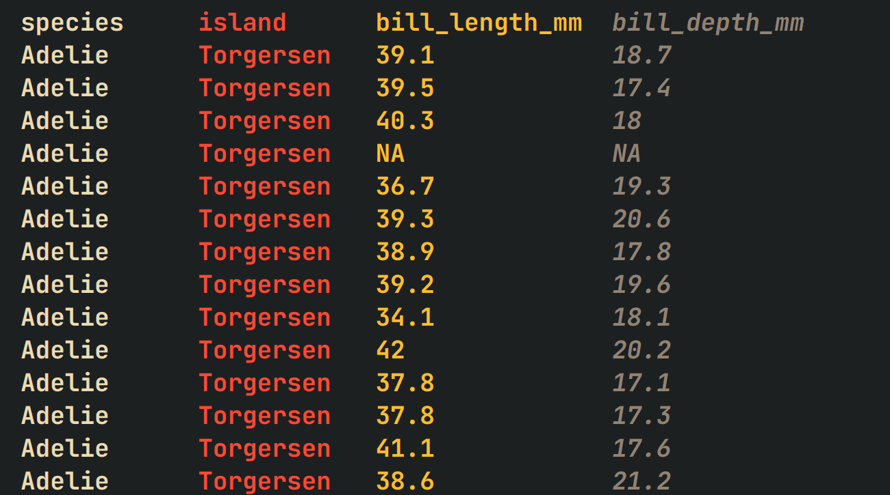
Common open-source geographic file formats
These files contain information on geographic features such as points, lines or polygons. There are a ton of geographical file formats, but here are some that are particularly popular.
ESRI shapefile (
.SHP)- Technically, the shapefile format is not open. It is, however, widely used.
GeoJSON (
.geojson, JSON variant with simple geographical features)GeoTIFF (
.tif,.tiff, TIFF variant enriched with GIS relevant metadata)GeoParquet (
.parquet) is an Open Geospatial Consortium (OGC) standard standard that adds interoperable geospatial types (Point, Line, Polygon) to Apache Parquet.
The GeoJSON format (Polygons)
This is a simple GeoJSON file defining 3 points that form a polygon.
The GeoJSON format
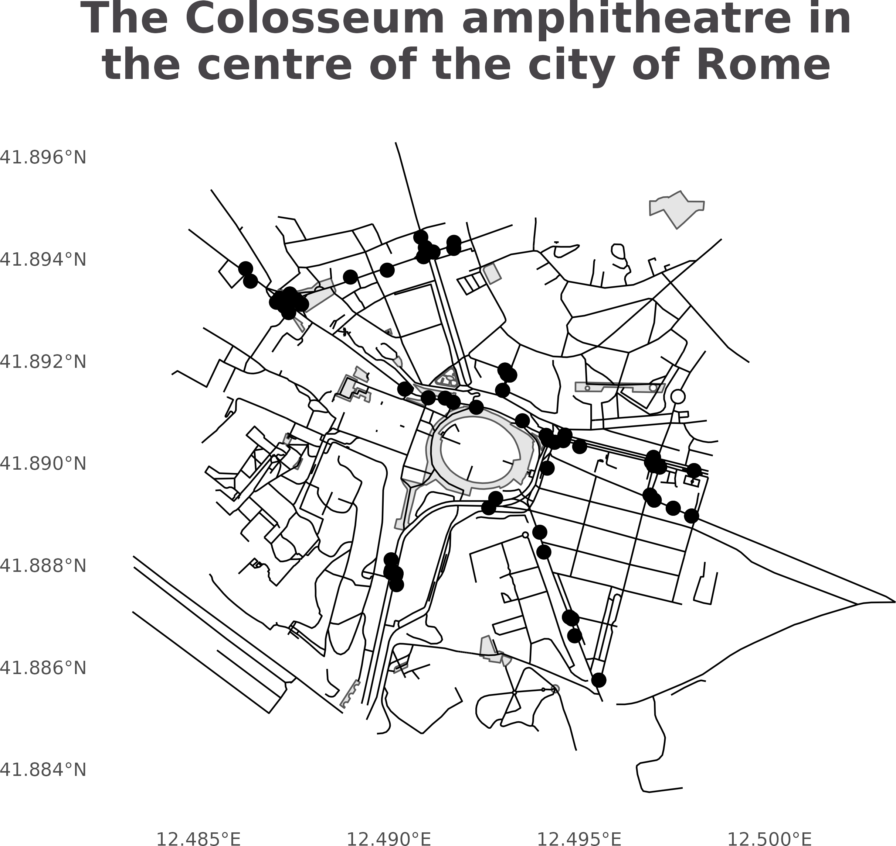
Data: https://bit.ly/2pAjOAr
The GeoTIFF format
Often associated with satellite imagery.
GeoTIFF is a public domain metadata standard that allows georeferencing information to be embedded within a TIFF file. The potential additional information includes map projection, coordinate systems, ellipsoids, datums, and everything else necessary to establish the exact spatial reference for the file.
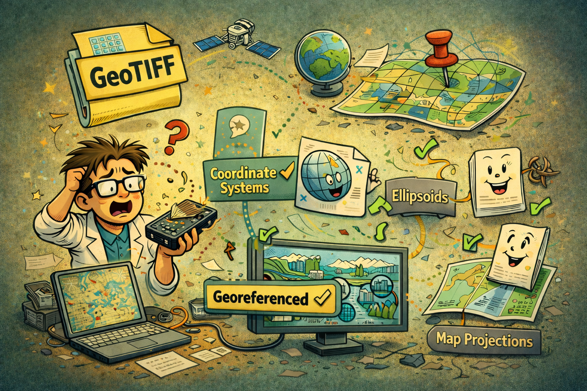
The GeoTIFF format (SST)
A GeoTIFF can contain information such as the Sea Surface Temperature (SST).
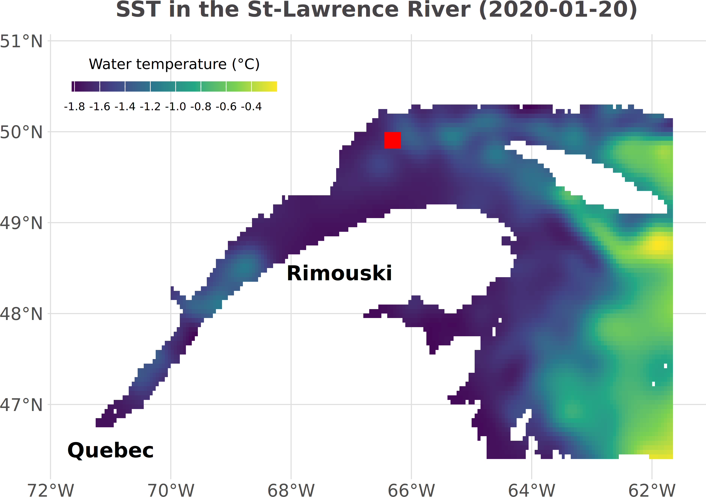
The GeoTIFF format (SST)
A closer look allows us to better visualize the values (i.e., water temperature) within each pixel.
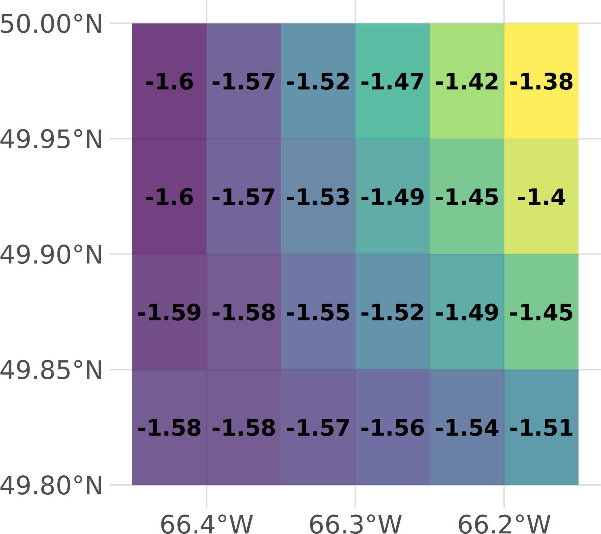
A note on geospatial data
It is usually a better idea to work with spatial objects (ex.: GeoTIFF, or geoparquet) rather than tabular data.
Geographic data presented in a tabular form:
| longitude | latitude | sst |
|---|---|---|
| -66.425 | 49.975 | -1.60 |
| -66.375 | 49.975 | -1.57 |
| -66.325 | 49.975 | -1.52 |
| -66.275 | 49.975 | -1.47 |
| -66.225 | 49.975 | -1.42 |
| -66.175 | 49.975 | -1.38 |
It is much easier to work with spatial data:
Geometric operations
Geographic Projection
Data extraction
Joining
And much more!
Data project good practices
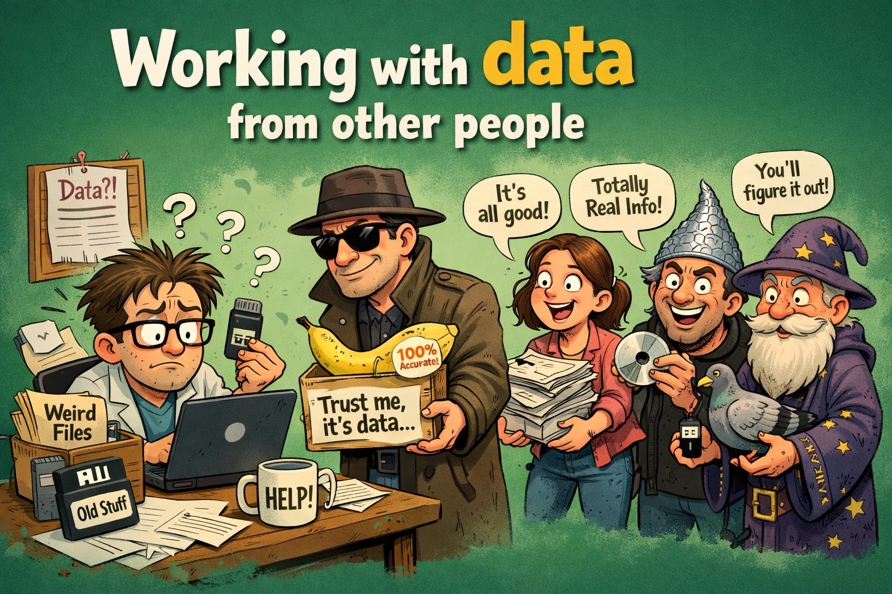
Preserve information: keep your raw data raw
Basic recommendations to preserve the raw data for future use:
Do not make any changes or corrections to the original raw data files.
- Changes made today may turn out to be wrong tomorrow.
Use a scripted language (R, Python, Matlab, etc.) to perform analysis or make corrections and save that information in a separate file.
If you want to do some analyses in Excel 1, make a copy of the file and do your calculations and graphs in the copy.
Project directory structure
Choosing a logical and consistent way to organize your data files makes it easier for you and your colleagues to find and use your data.
- Each project should be self-contained and include all the necessary files to reproduce the analyses and results.
Consider using a specific folder to store raw data files.
In my workflow, I use a folder named
rawin which I consider files as read-only.Data files produced by code are placed in a folder named
clean.
Project directory structure
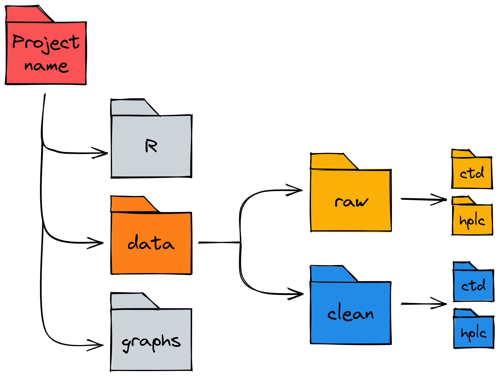
Documentation and metadata
Why bother documenting your data?
Good documentation helps making your research reproducible and reusable.
Data without documentation loses its meaning over time.
A common scenario:
- a student finishes their degree and nobody can understand their data or scripts.
Documentation and metadata
Use a
READMEfile to provide an overview of the project and instructions on how to use the data and scripts.It can include:
Project description: objectives and context.
Directory structure: what is in each folder.
How to run the analysis: dependencies, execution order.
Contact information: who to ask questions to.
README file example
📄 README.md
Forest Inventory 2024
Project description
Inventory of tree species and diameter at breast height (DBH) in the Montmorency Forest, collected in summer 2024.
Directory structure
project/ ├── data/ │ ├── raw/ # Raw field data (do not modify) │ └── processed/ # Cleaned datasets ├── scripts/ # R analysis scripts ├── results/ # Figures and tables └── README.md
How to run
Run scripts in order: 01_clean.R → 02_analysis.R → 03_figures.R
Contact
Jane Doe — jane.doe@ulaval.ca
Documenting your code
Add a header block at the top of each script/function:
#' Convert Coordinates
#'
#' This function converts coordinates from degrees and minutes to decimal
#' degrees.
#'
#' @param coords A character vector of coordinates in the format "degrees
#' minutes".
#'
#' @return A character vector of coordinates in decimal degrees.
convert_coords <- function(coords) {
parts <- str_split_fixed(coords, " ", 2L)
degrees <- parse_number(parts[, 1L])
minutes <- parse_number(parts[, 2L])
decimal_degrees <- degrees + (minutes / 60L)
signed_degrees <- if_else(
str_ends(parts[, 2L], fixed("W")) | str_ends(parts[, 2L], fixed("S")),
-decimal_degrees,
decimal_degrees
)
as.character(signed_degrees)
}Documenting your code
In your code:
- Avoid commenting the what, and instead comment the why.
- Use meaningful variable names.
File and variable naming
File naming: who can relate?
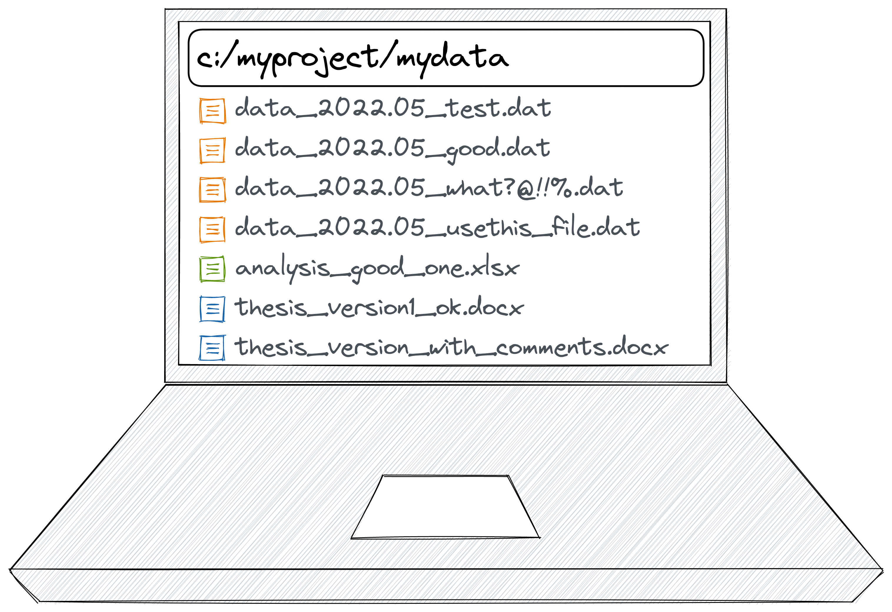
File naming basic rules
There are a few rules to adopt when naming files:
- Do not use special characters: ~ ! @ # $ % ^ & * ( ) ; < > ? , [ ] { } é è à
- No spaces.
This will ensure that the files are recognized by most operating systems and software.
-
meeting notes(jan2023).docx -
meeting_notes_jan2023.docx
File naming basic rules
For sequential numbering, use leading zeros to ensure files sort properly.
- For example, use
0001,0002,1001instead of1,2,1001.
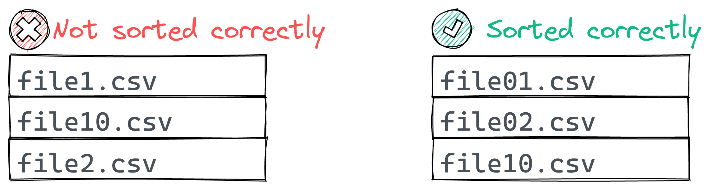
When file naming goes wrong!
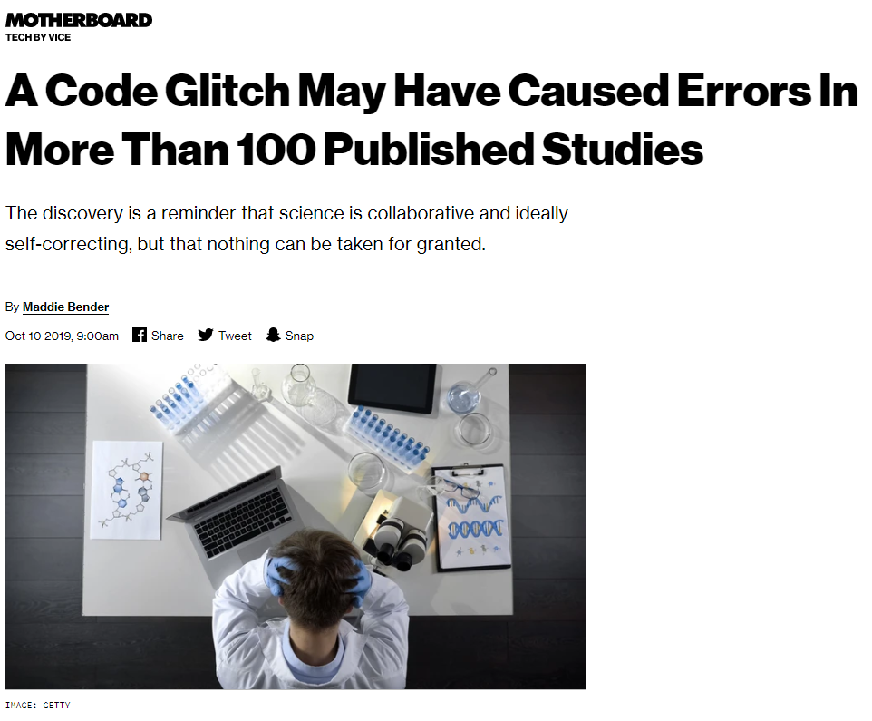
The glitch caused results of a common chemistry computation to vary depending on the operating system used, causing discrepancies among Mac, Windows, and Linux systems.
…the glitch, had to do with how different operating systems sort files.
When file naming goes wrong!
Data files were sorted differently depending on the operating system where the Python scripts were executed.
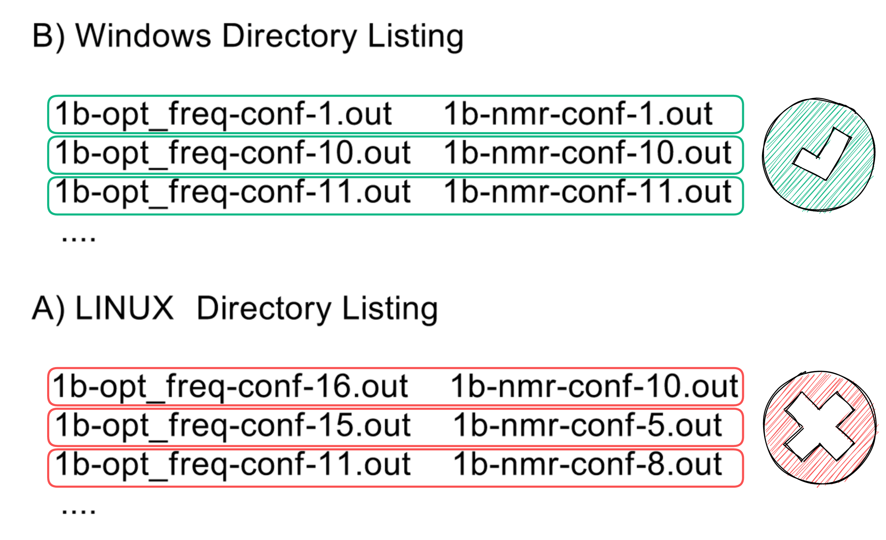
File naming basic rules
Be consistent and descriptive when naming your files.
Separate parts of file names with
_or-to add useful information about the data:Project name.
The sampling locations.
Type of data/variable.
Date (YYYY-MM-DD).
Always use the ISO 8601 format: YYYY-MM-DD (large small).
12-04-09 (2012-04-09 or 2004-12-09 or 2009-04-12, or …, There are a total of 6 possible combinations.)
2012-04-09 (2012 April 9th)
File naming basic rules (examples)
Imagine that you have to create a file containing temperature data from a weather station.
data.csv(not descriptive enough)temperature_1(what is the meaning of 1 ?, no number padding!)temperature_20160708(no file extension provided)station01_temperature_20160708.csv
Interesting resources:
Variable names
Be consistent with variable name capitalization:
temperature, precipitation
Temperature, Precipitation
Avoid mixing name capitalization:
temperature, Precipitation
temperature_min, TemperatureMax
Variable names
- Provide information about abbreviations.
tminvstemperature_minimum
- Explicitly state the unit of each variable:
depth_m,area_km2,distance_km,wind_speed_ms
- Be consistent with variable names across files:
tempvstemperatureuser_namevsusernamelast_updatedvsupdated_at
Variable names
Do not use special characters or spaces (same as for file names).
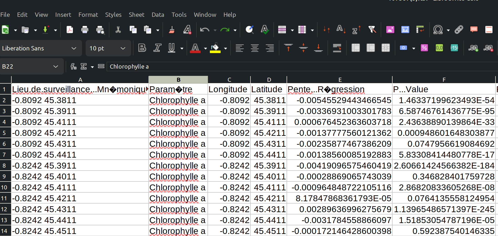
Tidy data
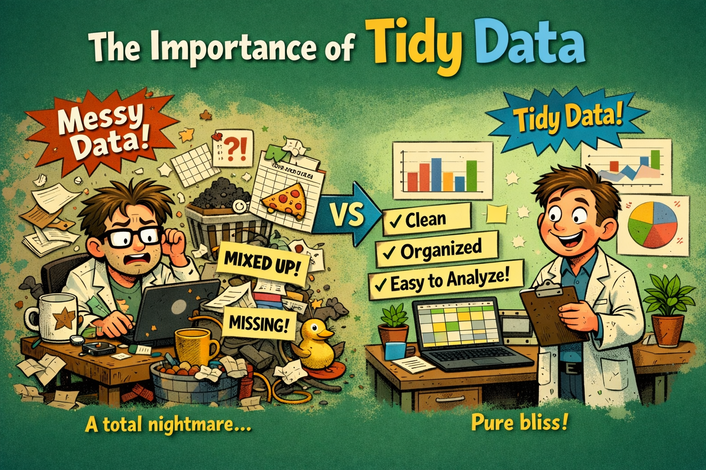
Why do we want tidy data?
Often said that 80% of the data analysis is dedicated to cleaning and data preparation!
Well-formatted data allows for quicker visualization, modeling, manipulation and archiving.
![On the left is a happy cute fuzzy monster holding a rectangular data frame with a tool that fits the data frame shape. On the workbench behind the monster are other data frames of similar rectangular shape, and neatly arranged tools that also look like they would fit those data frames. The workbench looks uncluttered and tidy. The text above the tidy workbench reads “When working with tidy data, we can use the same tools in similar ways for different datasets…” On the right is a cute monster looking very frustrated, using duct tape and other tools to haphazardly tie data tables together, each in a different way. The monster is in front of a messy, cluttered workbench. The text above the frustrated monster reads “...but working with untidy data often means reinventing the wheel with one-time approaches that are hard to iterate or reuse.](https://raw.githubusercontent.com/allisonhorst/stats-illustrations/master/rstats-artwork/tidydata_3.jpg)
Tidy data
The main idea is that data should be organized in columns with each column representing only a single type of data (character, numerical, date, etc.).

How data is often structured
Many researchers structure their data in such a way that it is easily manipulated by a human, but not so much programmatically.
A common problem is that the columns represent values, not variable names.
Example: a datasheet with species abundance data.
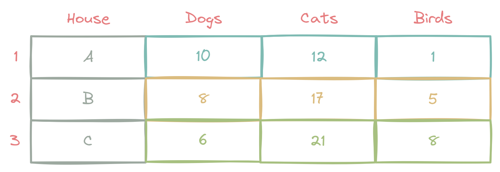
How data should be structured
After proper transformations, the data is now tidy (or in normal form). Each column is a variable, and each row is an observation.
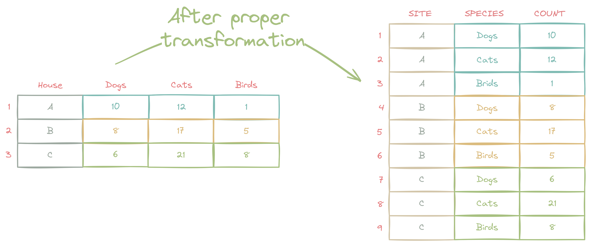
Keep your data as rectangle tables
If you use a spreadsheet program, keep your data arranged as rectangular tables. Otherwise, it makes data importation difficult.
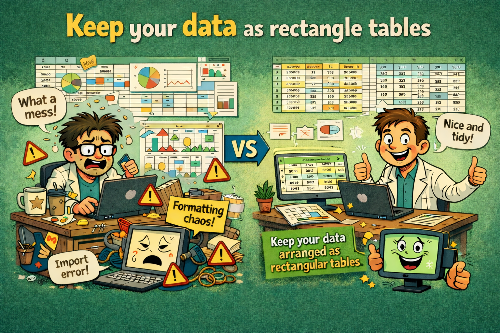
Keep your data as rectangle tables
These two examples show the same data. One is arranged as two tables whereas the other is correctly formatted into a single rectangle table.
This sheet has two tables
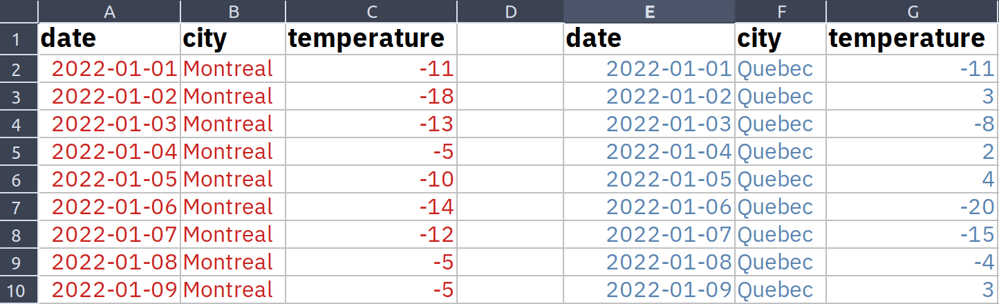
This sheet has one table
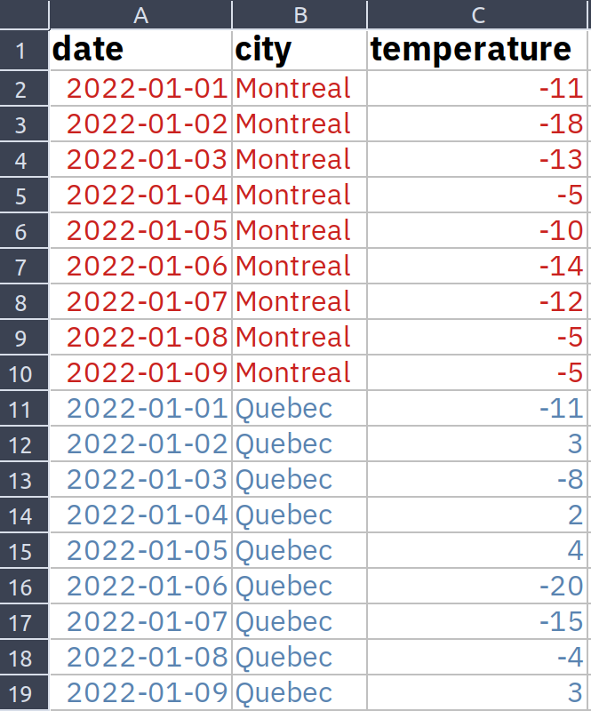
Keep your data as rectangle tables
Do not be that person 😩😖😠😤😣🤦♀️🤦♂️😑😓
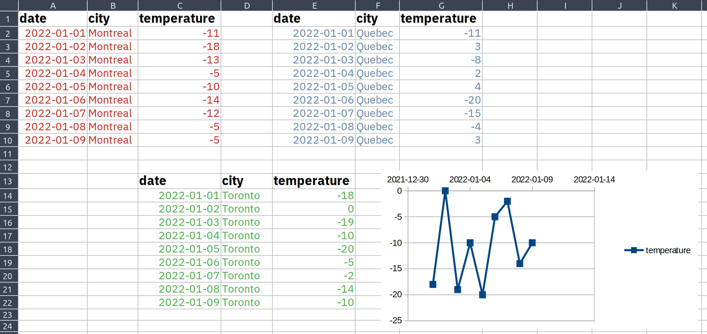
Missing values
Missing values should be simply represented by spaces in your data files.
R, Python, Matlab and other programming languages deal well with this.
If not possible, use a standardized code to represent missing values:
NA,NaN
Do not use a numerical value (ex.: -999) to indicate missing values.
- This can create situations where missing values will be silently included in calculations.
- Ex.: the average of these two vectors are different:
[1, NA, 3]= 2[1, -999, 3]= -331.6
Visualization
Once data is tidy, perform a visual inspection to make sure there are no obvious errors in your data.
A picture is worth a thousand words.
- Always, always, always plot the data!
A histogram can be used to represent the distribution of numerical data.
Visualization
In this example, we see that there is an outlier in the data. Measuring device fault? Manual entry error?
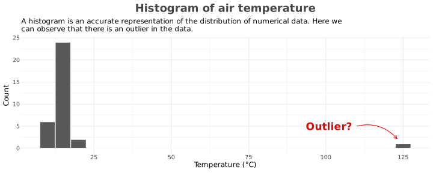
Backups
It is not if, but when your hard drive will fail.
Backups vs Archives
Backups
A backup is a copy of data created to restore said data in case of damage or loss. The original data is not deleted after a backup is made.1
Archives
The series of managed activities necessary to ensure continued access to digital materials for as long as necessary. Digital preservation is defined very broadly and refers to all of the actions required to maintain access to digital materials beyond the limits of media failure or technological change.
Those materials may be records created during the day-to-day business of an organization; ‘born-digital’ materials created for a specific purpose (e.g., teaching resources); or the products of digitization projects. This definition specifically excludes the potential use of digital technology to preserve the original artefacts through digitization.2
Importance of backups
Disk space is much cheaper than the time you invested in collecting, cleaning and analyzing your data.
It is important to have redundancy in your data.
A copy of your working directory in another directory on the same hard drive is not redundancy!
Backups should not be only done on your computer (use cloud services):
Google Drive
Microsoft OneDrive (1TB of space if working at Laval University)
Dropbox
Important
Check with your institution or funding agency to see if they have a policy on data storage and backup. You may be required to use a specific service for sensitive data.
Importance of backups
The 3-2-1 backup rule
3 total copies of your data (the original and two backups).
2 different media types for the backups (e.g., an external hard drive and cloud storage).
1 copy stored offsite, to protect against local disasters like fire or theft.
Importance of backups
Use an incremental strategy to backup your data (ideally daily):
I keep three months of data at three different locations:
On my computer.
On an external hard drive.
On a cloud service provided by my university.
Restoring from an incremental backup
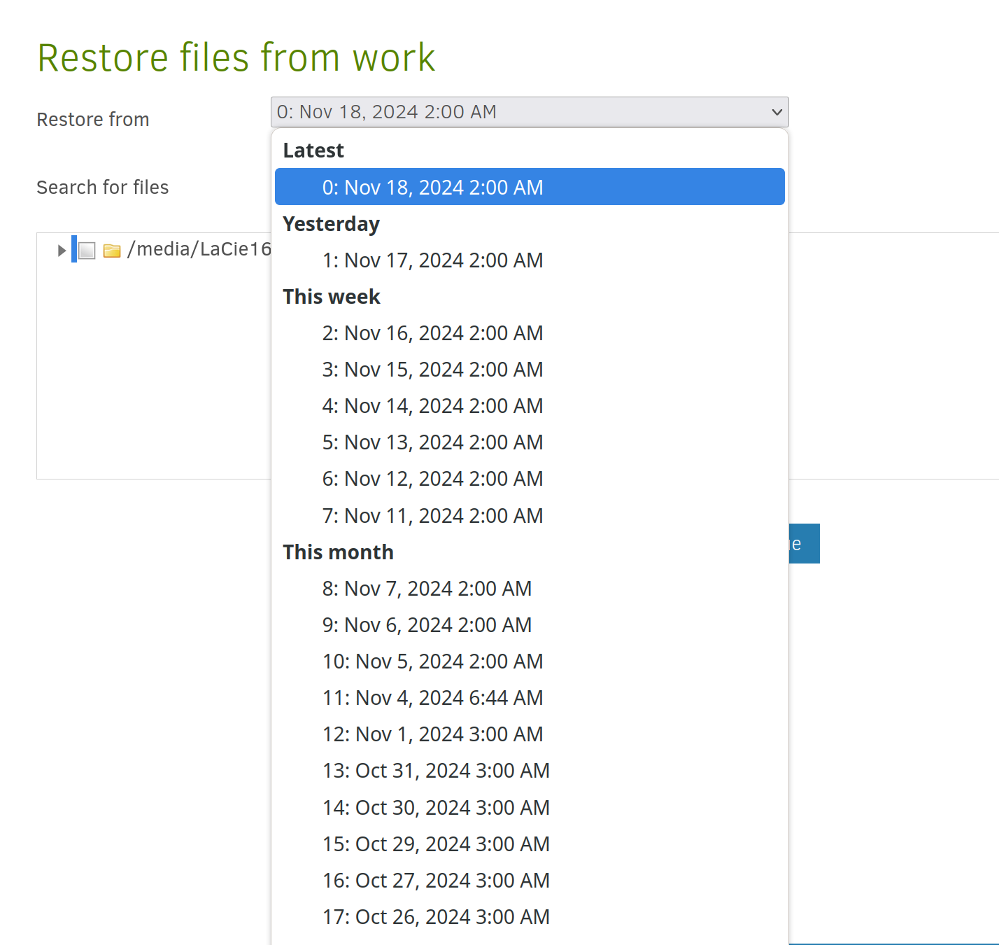
Source code management
Backups of the source code used to generate data are also important.
Git is a version control system used to keep track of changes in computer files.
- Primarily used for source code management in software development.
- Coordinating work on those files among multiple people.
Publishing your data
Publishing your data
Many journals and funding agencies now require to have archiving strategies. Why?
Share your data (publicly funded research should be accessible).
Make your data discoverable.
Make your data citable (using DOI, Digital Object Identifier).
- Data collection is resource-intensive.
- Publishing allows others to credit your work.
Others can find and fix errors in your data.
Data can be reused in other studies.
Publishing your data
The traditional way to publish data is to include it as supplementary information with your paper.
- In an appendix along with your paper (assuming that your paper is published in an open-access journal).
- Data presented in an appendix are rarely reviewed by peers.
The Directory of Open Access Journals is useful for searching for open access journals.
Public announcement
Summary tables in a PDF article are not very useful!

You should rather provide the data in a way that is easily importable into a programming language as supplementary information (for example, a CSV file).
What is a data paper?
Another way to publish data is to write a data paper.
- Data papers are interesting alternatives to publish data:
- Peer-reviewed (high-quality data, in theory!).
- Generally open access (obviously!).
- Data are citable with a DOI.
A data paper is a peer-reviewed document describing a dataset, published in a peer-reviewed journal. It takes effort to prepare, curate and describe data. Data papers provide recognition for this effort by means of a scholarly article.
What is a data paper?
A data paper is similar to a traditional scientific paper.
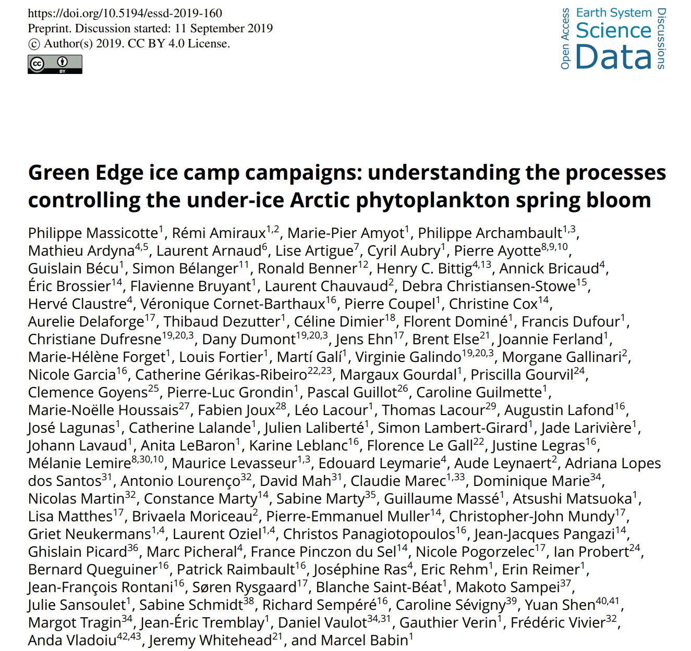
What is a data paper?
The data associated with the paper is available online with an associated DOI.
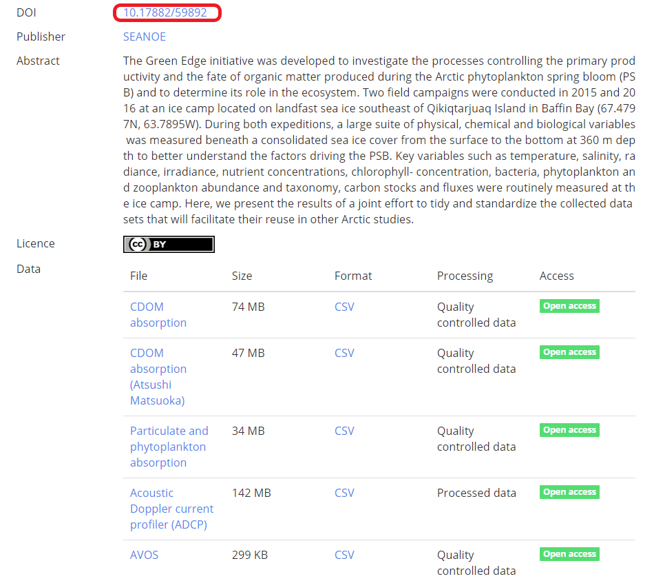
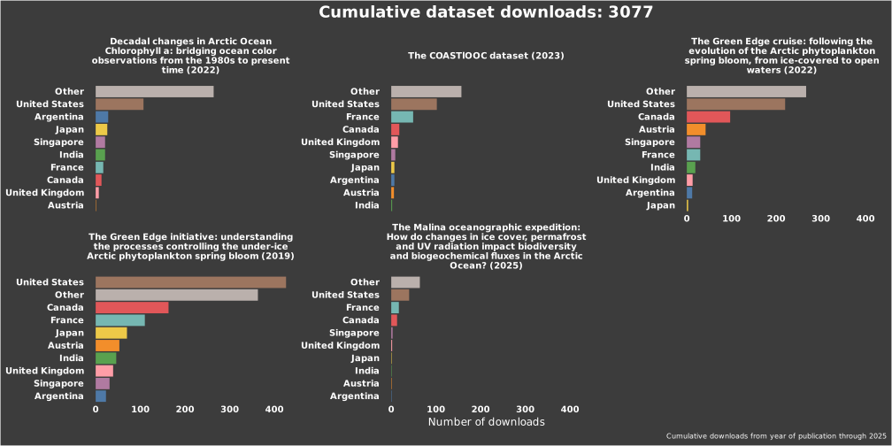
Open data repositories
Take home messages
Take home messages
Choose non-proprietary file formats (ex.:
CSV).Give your files and variables meaningful names.
Tidy and visually explore your data to remove obvious errors.
Document your data and scripts (
README, data dictionary).Back up your data externally as often as possible.
- Your hard drive will eventually crash, for sure!
Use a version control system (git) for your analysis scripts.
When possible, share the data and the scripts that were used in your research papers.